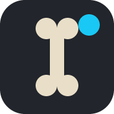

Gizlilik bildirimi
Türkçe
Kısaca: Anatomi 3D hesap istemez; reklam, çerez, analiz ve izleme içermez. Uygulama kendisi hiçbir kişisel veriyi toplamaz, bir sunucuya göndermez ve kimseyle paylaşmaz.
İletişim
Sorular, düzeltmeler ve hata bildirimleri için projenin GitHub deposundaki konu (issue) sayfasını kullanın: https://github.com/alikaankaraduman/anatomi3d-atlas/issues. Oraya yazdıklarınız herkese açıktır; kişisel bilgi yazmayın.
Cihazınızda saklananlar
Aşağıdakiler yalnız bu cihazda, tarayıcının ya da uygulamanın yerel depolamasında (localStorage, önbellek) durur ve cihazdan dışarı gönderilmez:
- beden seçimi (kadın / erkek) ve ayarlar (ör. sistemlerin gerektiğinde yüklenmesi, yapı ağacı görünümü, kesit ayarları),
- test ve deneme sınavı ilerlemesi (doğru / yanlış sayıları, son sınavlar),
- isteğe bağlı kullanıcı profilleri: ad, şifrenin özeti (PBKDF2; şifrenin kendisi saklanmaz; kısa bir şifre, cihaza erişen biri tarafından özetten tahmin edilebilir, bu yüzden başka bir yerde kullandığınız şifreyi kullanmayın) ve her profilin ilerlemesi. Profiller yalnız oluşturuldukları cihazda vardır; şifre profilleri bu cihazda birbirinden ayırır, veriler şifrelenmez. Dışa aktarılan profil dosyası şifre bilgisi içermez ve yalnız sizin seçtiğiniz yere kaydedilir,
- kişisel bir bağlantıyla açılan not (alıcının adı, isteğe bağlı gönderenin adı, not, tarih, renk ve uygulama adı): böyle bir bağlantıyı yalnız bu yayının özel imza anahtarına sahip olan kişi oluşturabilir; uygulama bağlantının imzasını denetler ve imzası tutmayan bağlantıyı açmaz. Notun metni yalnız bağlantının kendisinde (adresin # işaretinden sonraki kısmı; tarayıcı bu kısmı hiçbir sunucuya göndermez) ve bağlantıyı açıp "Başla" diyen cihazda durur; uygulama onu hiçbir sunucuya göndermez. Bağlantının kendisi, gönderildiği uygulamada (ör. mesajlaşma) ve tarayıcı geçmişinde (geçmiş eşitleme açıksa tarayıcının hesabında da) durur; bağlantıyı alan herkes notu okuyabilir. Cihazdaki not Hakkında › "Sana özel not" › "Bu cihazdan kaldır" ile silinir. Bağlantı ayrıca bir mesaj kaynağı içeriyorsa, uygulama yalnız o cihazda her açılışta bağlantı sahibinin yazdığı kısa mesajı GitHub'dan (api.github.com, gizli bir Gist) okur: bu istekle GitHub cihazın IP adresini ve tarayıcı bilgisini görür. Mesaj orada şifrelidir, anahtarı yalnız bağlantının içindedir; son okunan mesaj cihazda saklanır,
- çevrimdışı kullanım için indirilen uygulama dosyaları ve 3B modeller (web sürümünde service worker önbelleği).
Bu veriler tarayıcının ya da uygulamanın yerel depolamasında kalır, uygulama tarafından cihazdan gönderilmez ve geliştirici bunlara erişemez (kişisel notun bağlantısı için yukarıya bakın).
Web sürümü: barındırma hizmeti
Web sürümü açıldığında sayfayı sunan barındırma hizmeti, her web sitesinde olduğu gibi, dosyaları iletebilmek için IP adresinizi, tarayıcı ve cihaz bilgisini ve istenen adresi teknik olarak işler ve kısa süre kayıt tutabilir. Barındırıcı adres çubuğundaki alan adından anlaşılır: github.io adreslerinde GitHub, Inc. (ABD), netlify.app adreslerinde Netlify, Inc. (ABD); işleme onun gizlilik politikasına göre yapılır. Netlify ücretsiz planda sayfaya kendi rozetini ("Powered by Netlify") ekleyebilir; bu rozet barındırıcının kendi içeriğidir.
Mağaza uygulaması
Mağazadan (Google Play, App Store) kurulan uygulama dosyalarını ve modellerini kendi içinde taşır, açılırken internete bağlanmaz. Uygulama mağazası, uygulamayı indirmeniz ve güncellemeniz sırasında kendi koşullarına göre veri işler; bu, uygulamanın denetiminde değildir. Android, cihazınızda yedekleme açıksa uygulamanın yerel verisini (ayarlar, ilerleme) Google hesabınızdaki şifreli yedeğe alabilir; bu yedek sizin hesabınızdadır, geliştirici erişemez.
Olmayanlar
- Sunucuda hesap, giriş ya da kayıt yok (isteğe bağlı kullanıcı profilleri yalnız bu cihazdadır, yukarıya bakın).
- Reklam, analiz (istatistik), çerez, parmak izi ya da izleme yok.
- Kamera, mikrofon, konum ya da kişiler gibi izinler istenmez.
- Başka bir adrese veri gönderilmez; uygulama yalnız kendi dosyalarını yükler.
Verileri silmek
- Web sürümü: tarayıcı ayarlarından bu sitenin verilerini silin, ya da uygulamada ⓘ › Çevrimdışı kullanım › "Önbelleği temizle" (indirilen modeller için).
- Ana ekrana eklenen web uygulaması ya da mağaza uygulaması: uygulamayı kaldırmak cihazdaki bütün yerel verileri siler; Android'de Ayarlar › Uygulamalar › Anatomi 3D › Depolama › "Verileri temizle" de olur. Android yedeklemesi açıksa uygulama yeniden kurulunca ilerleme Google hesabınızdaki yedekten geri gelebilir; bu kopyayı Google Drive › Yedekler bölümünden silebilir ya da cihazda yedeklemeyi kapatabilirsiniz.
Haklarınız
Geliştirici sizinle ilgili hiçbir veri tutmadığı için erişim, düzeltme ya da silme talebine konu olacak bir kayıt yoktur. Sorularınız için yukarıdaki konu sayfasını kullanabilirsiniz. Barındırıcının ve mağazanın işlediği veriler için onlara başvurabilirsiniz.
Not
Anatomi 3D yalnız öğrenme ve tekrar içindir; tanı ya da tedavi için kullanılamaz. Metinler ve sorular yapay zekâ ile yazılmış ve denetlenmiştir, bir anatomi uzmanınca gözden geçirilmemiştir. Bu bildirim değişirse tarih güncellenir.
Deutsch
Kurz: Anatomi 3D braucht kein Konto und enthält keine Werbung, keine Cookies, keine Analyse und kein Tracking. Die App selbst erhebt keine personenbezogenen Daten, sendet keine an einen Server und gibt keine weiter.
Kontakt
Für Fragen, Korrekturen und Fehlermeldungen nutzen Sie bitte die Issue-Seite des GitHub-Repositorys: https://github.com/alikaankaraduman/anatomi3d-atlas/issues. Was Sie dort schreiben, ist öffentlich; geben Sie keine persönlichen Daten an.
Was auf Ihrem Gerät gespeichert wird
- Körperwahl (weiblich / männlich) und Einstellungen,
- Fortschritt in Tests und Probeklausur,
- optionale Benutzerprofile: Name, ein Hash des Passworts (PBKDF2; das Passwort selbst wird nicht gespeichert; ein kurzes Passwort kann von jemandem mit Zugriff auf das Gerät aus dem Hash erraten werden, verwenden Sie daher kein Passwort, das Sie anderswo nutzen) und der Fortschritt jedes Profils. Profile gibt es nur auf dem Gerät, auf dem sie angelegt wurden; das Passwort trennt die Profile auf diesem Gerät, die Daten werden nicht verschlüsselt. Eine exportierte Profildatei enthält keine Passwortdaten und wird nur dort gespeichert, wo Sie sie ablegen,
- die mit einem persönlichen Link geöffnete Notiz (Name des Empfängers, optional des Absenders, Notiz, Datum, Farbe und App-Name): einen solchen Link kann nur erstellen, wer den privaten Signaturschlüssel dieser Veröffentlichung besitzt; die App prüft die Signatur des Links und öffnet keinen Link, dessen Signatur nicht stimmt. Der Text der Notiz steht nur im Link selbst (dem Teil der Adresse nach dem #-Zeichen, den der Browser an keinen Server sendet) und auf dem Gerät, das den Link öffnet und „Başla“ wählt; die App sendet ihn an keinen Server. Der Link selbst bleibt außerdem in der App, über die er verschickt wurde (z. B. ein Messenger), und im Browserverlauf (bei aktivierter Verlaufssynchronisierung auch im Konto des Browsers); wer den Link erhält, kann die Notiz lesen. Die Notiz auf dem Gerät ist löschbar über Info › „Sana özel not“ › „Bu cihazdan kaldır“. Enthält der Link zusätzlich eine Nachrichtenquelle, liest die App nur auf diesem Gerät bei jedem Start eine kurze Nachricht des Link-Erstellers von GitHub (api.github.com, ein geheimer Gist): GitHub sieht dabei die IP-Adresse und Browserangaben des Geräts. Die Nachricht liegt dort verschlüsselt, der Schlüssel steht nur im Link; die zuletzt gelesene Nachricht wird auf dem Gerät gespeichert,
- für die Offline-Nutzung heruntergeladene App-Dateien und 3D-Modelle (in der Webversion im Service-Worker-Cache).
Diese Daten bleiben im lokalen Speicher des Browsers bzw. der App, werden von der App nicht vom Gerät gesendet und sind für den Entwickler nicht zugänglich (zum Link einer persönlichen Notiz siehe oben).
Webversion: Hosting
Beim Aufruf der Webversion verarbeitet der Hosting-Anbieter, wie bei jeder Website, technisch Ihre IP-Adresse, Browser- und Geräteangaben und die aufgerufene Adresse, um die Dateien auszuliefern, und kann dazu kurzzeitig Protokolle führen. Der Anbieter ergibt sich aus der Domain in der Adresszeile: bei github.io-Adressen GitHub, Inc. (USA), bei netlify.app-Adressen Netlify, Inc. (USA), jeweils nach dessen Datenschutzerklärung. Netlify kann im kostenlosen Tarif ein eigenes Abzeichen („Powered by Netlify“) einblenden.
Store-App
Die aus einem Store installierte App enthält ihre Dateien und Modelle selbst und baut beim Start keine Verbindung ins Internet auf. Der Store verarbeitet beim Herunterladen und Aktualisieren Daten nach seinen eigenen Bedingungen. Ist auf einem Android-Gerät die Sicherung aktiviert, kann Android die lokalen App-Daten (Einstellungen, Fortschritt) verschlüsselt in Ihrem Google-Konto sichern; der Entwickler hat darauf keinen Zugriff.
Was es nicht gibt
Kein Konto und keine Anmeldung bei einem Server (optionale Benutzerprofile bleiben auf dem Gerät), keine Werbung, keine Analyse, keine Cookies, kein Tracking, keine Berechtigungen für Kamera, Mikrofon, Standort oder Kontakte, keine Datenübertragung an andere Adressen.
Daten löschen
Webversion: Websitedaten im Browser löschen oder in der App ⓘ › Offline-Nutzung › „Önbelleği temizle“. Installierte App: Deinstallieren löscht alle lokalen Daten auf dem Gerät (Android auch: Einstellungen › Apps › Anatomi 3D › Speicher › Daten löschen). Ist die Android-Sicherung aktiv, kann der Fortschritt bei einer Neuinstallation aus der Sicherung in Ihrem Google-Konto zurückkehren; diese Kopie löschen Sie unter Google Drive › Sicherungen oder indem Sie die Sicherung auf dem Gerät ausschalten.
Ihre Rechte
Da der Entwickler keine Daten über Sie speichert, gibt es keine Datensätze für Auskunft, Berichtigung oder Löschung. Fragen stellen Sie über die oben genannte Issue-Seite; für Daten des Hosting-Anbieters oder Stores wenden Sie sich an diese. Sie haben das Recht, sich bei einer Datenschutz-Aufsichtsbehörde zu beschweren.
Nur zum Lernen, nicht für Diagnose oder Behandlung. Texte und Fragen wurden mit KI geschrieben und geprüft, nicht von einer Anatomin oder einem Anatomen. Stand: 21. November 2026.
English
In short: Anatomi 3D needs no account and contains no ads, cookies, analytics or tracking. The app itself does not collect personal data, does not send any to a server and does not share any.
Contact
For questions, corrections and bug reports, please use the issue page of the project's GitHub repository: https://github.com/alikaankaraduman/anatomi3d-atlas/issues. What you write there is public; do not include personal information.
What is stored on your device
- body choice (female / male) and settings,
- quiz and mock exam progress,
- optional user profiles: name, a hash of the password (PBKDF2; the password itself is not stored; a short password can be guessed from the hash by someone with access to the device, so do not use a password you use elsewhere) and each profile's progress. Profiles exist only on the device they were created on; the password separates profiles on this device, the data is not encrypted. An exported profile file contains no password data and is saved only where you put it,
- the note opened with a personal welcome link (recipient name, optionally the sender name, note, date, colour and app name): such a link can only be created by whoever holds the private signing key of this deployment; the app verifies the link's signature and does not open a link whose signature does not match. The text of the note exists only in the link itself (the part of the address after the # sign, which the browser never sends to any server) and on the device that opens the link and chooses "Başla"; the app never sends it to any server. The link itself also stays in the app it was sent through (for example a messenger) and in the browser history (with history sync turned on, also in the browser account); anyone who receives the link can read the note. The note on the device can be removed via About › "Sana özel not" › "Bu cihazdan kaldır". If the link also contains a message source, the app, on that device only, reads a short message written by the link's creator from GitHub (api.github.com, a secret Gist) at every start: GitHub sees the device's IP address and browser details with that request. The message is stored there encrypted and its key exists only inside the link; the last message read is kept on the device,
- app files and 3D models downloaded for offline use (in the web version, in the service worker cache).
This data stays in the browser's or app's local storage, is never sent off the device by the app and cannot be accessed by the developer (for the link of a personal note, see above).
Web version: hosting
When you open the web version, the hosting provider processes your IP address, browser and device information and the requested address to deliver the files, as every web server does, and may keep short-lived logs. The provider follows from the domain in the address bar: GitHub, Inc. (USA) for github.io addresses, Netlify, Inc. (USA) for netlify.app addresses, each under its own privacy policy. On its free plan Netlify may show its own badge ("Powered by Netlify").
Store app
The app installed from a store carries its files and models inside and does not connect to the internet when it starts. The store processes data under its own terms when you download and update the app. If backup is turned on on an Android device, Android may back up the app's local data (settings, progress) encrypted to your Google account; the developer has no access to it.
What there is not
No account or sign-in on any server (optional user profiles stay on the device), no ads, no analytics, no cookies, no tracking, no camera, microphone, location or contacts permissions, no data sent to other addresses.
Deleting your data
Web version: clear this site's data in the browser settings, or in the app use ⓘ › Offline use › "Önbelleği temizle". Installed app: uninstalling removes all local data on the device (on Android also Settings › Apps › Anatomi 3D › Storage › Clear data). If Android backup is on, progress may come back from the backup in your Google account when you reinstall; delete that copy under Google Drive › Backups, or turn backup off on the device.
Your rights
As the developer stores no data about you, there are no records to access, correct or delete. Ask questions on the issue page above; for data processed by the hosting provider or the store, contact them.
For learning only, not for diagnosis or treatment. Texts and questions were written and checked with AI, not reviewed by an anatomist. Last updated: 21 November 2026.